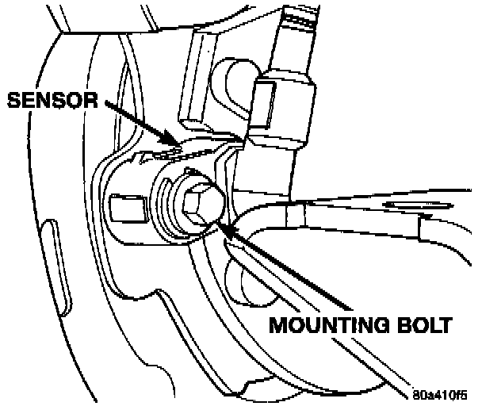

Rear
REMOVAL1. Raise and fold rear seat forward. Then move carpeting aside for access to rear sensor connectors.
2. Disconnect rear sensor wires at harness connectors.
3. Push sensor wires and grommets through floor-pan holes.
4. Raise vehicle and remove wheel and tire assemble.
5. Remove disc brake caliper and rotor.
6. Disengage sensor wire from axle and chassis brackets and from brake line retainers.
Sensor Mounting Bolt:

7. Remove bolt attaching sensor to splash shield bracket.
8. Remove sensor from splash shield bracket.
INSTALLATION
1. Insert sensor through splash shield hole.
2. Apply Mopar Lock N' Seal or Loctite 242 to original sensor bolt. Use new bolt if original is worn or damaged.
3. Install sensor bolt finger tight only at this time.
Rear Wheel Speed Sensor:

4. If original sensor is being installed or adjusted, remove any remaining pieces of cardboard spacer from sensor pickup face. Set air gap to 0.920 to 1.275 mm (0.036 to 0.050 inch) with feeler gauge. Tighten sensor bolt to 14 Nm (11 ft. lbs.).
5. If new sensor is being installed, push cardboard spacer on sensor face against tone ring. Then tighten sensor bolt to 14 Nm (11 ft. lbs.). Correct air gap will be established as tone ring rotates and peels spacer off sensor face.
6. Route sensor wires to rear seat area.
7. Feed sensor wires through floorpan access hole and seat sensor grommets in floorpan.
8. Secure sensor wire in brackets and in retainers on rear brake lines. Verify that sensor wire is secure and clear of rotating components.
9. Install rotor, caliper and wheel, lower vehicle.
10. Fold rear seat and carpet forward for access to sensor wires and connectors.
11. Connect sensor wires to harness connectors.
12. Reposition carpet and fold rear seat down.